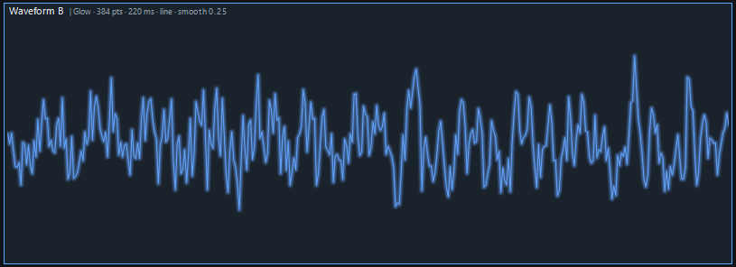
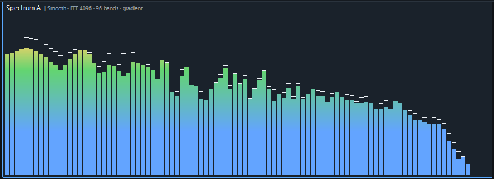
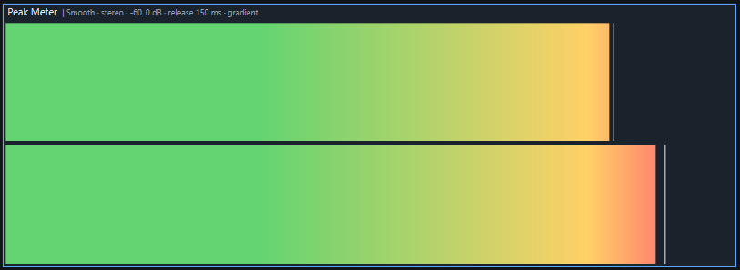
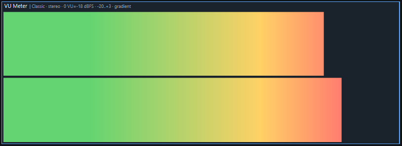
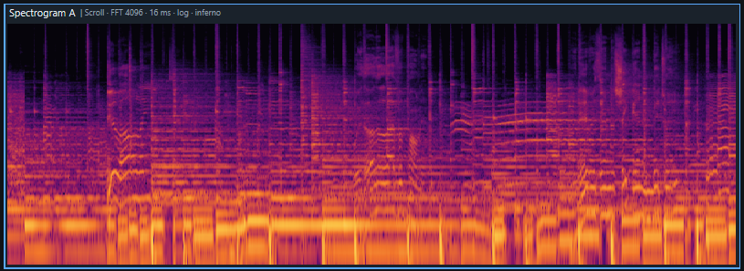
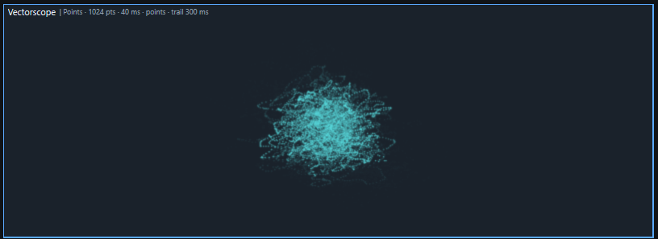
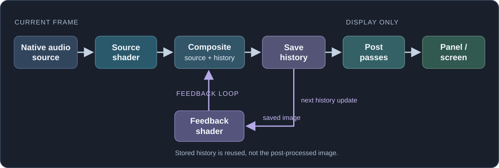

Visualizations
JSplitter provides a visualization API built around reusable audio sources and renderers. A source prepares audio measurements; a renderer turns them into a picture. Six native sources are available: Waveform, Spectrum, Peak Meter, VU Meter, Spectrogram, and Vectorscope. Each source can use its built-in renderer or provide data to a custom JavaScript or shader renderer.
This article covers both approaches: it starts with the built-in visualizations and their settings, then explains how the same sources can be used with custom renderers.
How the analysis engine works
Each panel has one native analysis engine shared by its visualizations. It starts with the first visualization, stops after the last one is released, and performs audio analysis on a dedicated thread.
Active sources request only the measurements they need, and compatible analysis work is reused automatically. vis.UpdateIntervalMs controls the requested analysis cadence; the default is 16 ms. Panel repainting is independent: scripts request repaints and Draw renders the latest available snapshot.
Creating your first visualization
Start playback and run this complete script in a panel. It creates one waveform, draws it in the paint callback and requests regular repaints:
include('docs/Flags.js');
// Create a waveform visualization with default settings and built-in renderer.
const waveform = vis.Create(VisSourceType.Waveform);
// Match the background as well, so theme-colored content remains visible.
const backgroundColor = window.InstanceType === UIInstanceType.DefaultUI ?
window.GetColourDUI(ColourTypeDUI.background) : window.GetColourCUI(ColourTypeCUI.background);
function on_paint(gr) {
const w = window.Width, h = window.Height;
gr.FillSolidRect(0, 0, w, h, backgroundColor);
if (w > 0 && h > 0) waveform.Draw(gr, 0, 0, w, h);
}
setInterval(() => window.Repaint(), 33); // Request roughly 30 FPS presentation.include loads the named constants used by the script. on_paint paints the panel, Draw draws the latest visualization snapshot inside the specified rectangle, and the timer requests another paint with Repaint. A visualization does not clear the panel, so draw the background before calling Draw. The built-in renderer uses the active UI text color by default; the example therefore uses the matching DUI/CUI background color.
Sources and renderers
Audio reaches the engine as PCM (Pulse-Code Modulation): successive amplitude samples for each channel.
vis.Create creates a visualization from one of JSplitter's native audio sources.
Create(source_id[, source_params, renderer])source_id selects which audio source to use. It is a numeric source ID from 0 to 5; for readability, use the corresponding VisSourceType constants.
source_params configures the source analysis. Available settings depend on the selected source and are listed with each visualization below. Omit the argument, or pass null or undefined, to use the source defaults.
const spectrum = vis.Create(VisSourceType.Spectrum, { fftSize: 2048 });renderer controls how the source data is displayed. With Create, pass either a built-in renderer settings object or a JavaScript drawing callback. Omit the argument, or pass null or undefined, to use the default built-in renderer.
const waveform = vis.Create(VisSourceType.Waveform, null, { style: "line", lineWidth: 2 });The returned Visualization object has Draw, which draws inside the specified rectangle in panel pixels. The visualization does not schedule repaints by itself, so the script requests them with window.Repaint. Create the visualization once, outside on_paint.
Changing settings at runtime
The returned Visualization object exposes settings that can be inspected and changed at runtime. The tables below pair creation settings with their corresponding runtime properties. Unless noted otherwise, exposed settings are readable and writable.
Source and renderer settings are exposed on the same visualization object. Source properties remain available with every renderer type. Built-in renderer properties are exposed only by built-in visualizations; JavaScript callbacks perform their own drawing, while shader visualizations expose only their shader-specific renderer properties.
const waveform = vis.Create(VisSourceType.Waveform, { points: 256 }, { style: "envelope" });
waveform.Points = 512;
waveform.Style = "line";Creation settings use lower camel case, such as fftSize; the corresponding runtime properties use JSplitter property naming, such as FftSize. Changing a runtime property updates the running visualization.
On the returned visualization object, SourceType, RendererType, and DebugInfo are read-only.
Selecting source channels
Waveform, Spectrum, Peak Meter, VU Meter, and Spectrogram use channel to select the audio input. Vectorscope uses leftChannel and rightChannel instead.
A channel selector accepts a channel name or PCM index:
const left = vis.Create(VisSourceType.Waveform, { channel: "left" });
const second = vis.Create(VisSourceType.Waveform, { channel: 1 });The same selector can be changed later through Channel:
left.Channel = "right";| Selector | Meaning |
|---|---|
| "mix" | Mix all available channels to mono. This is the default. |
| Channel name | Select a speaker position such as "left", "right", or "rear-left". |
| Non-negative integer | Select a fixed PCM channel index. |
To inspect the channels available in the current stream, use vis.AudioFormat. Its Channels array lists them in PCM index order with their known names:
const format = vis.AudioFormat;
if (format) {
for (const channel of format.Channels) {
console.log(channel.Index, channel.Names);
}
}vis.AudioFormat describes the current post-processing PCM stream, so it may differ from the source file after DSP, downmixing, or upmixing. It is null when no current audio format is available. See AudioFormat for the complete object.
Vectorscope uses two selectors instead: leftChannel and rightChannel at creation time, and LeftChannel and RightChannel at runtime. They accept channel names or PCM indices, but not "mix":
const vectorscope = vis.Create(VisSourceType.Vectorscope, {
leftChannel: "left",
rightChannel: "right"
});Built-in visualizations
JSplitter provides a built-in renderer for each native visualization source. The sections below show creation examples, screenshots, and the corresponding source and renderer settings.
Interactive showcase: Builtin - Interactive Showcase.js places all six built-in visualization types in one live grid.
Colors in JavaScript settings use 0xAARRGGBB. Where a renderer default is described as UI text color, it is initialized from the current DUI/CUI text color when the visualization is created.
Waveform
A waveform displays the recent audio signal as amplitude over time. Its center line represents zero amplitude, with positive and negative excursions on either side. A line trace reveals the oscillations; an envelope makes the signal’s minimum and maximum excursions easier to see at high sample densities.
const waveform = vis.Create(
VisSourceType.Waveform,
{ points: 384, durationMs: 220, smoothing: 0.25 },
{ style: "line", color: 0xff63a4ff, gain: 1.35, glowStrength: 0.5, glowRadius: 4 }
);
Source — VisSourceType.Waveform
The Waveform source prepares either a resampled center trace or a min/max envelope. The built-in line renderer and shader renderer use the center trace; the built-in envelope renderer uses the min/max data. A JavaScript callback receives all three arrays.
| Setting | Runtime property | Default | Allowed values | Description |
|---|---|---|---|---|
| channel | Channel | "mix" | "mix", channel name, or non-negative PCM index | Select the audio input using the channel selector described above. An unavailable channel produces silence. |
| points | Points | "auto" | Integer 16–4096 or "auto" | Resolution of the returned waveform. Automatic mode follows drawing width; a fixed count does not. |
| durationMs | DurationMs | 300 | Integer 20–2000 ms | How much of the recent PCM signal to show, in milliseconds. Short windows reveal individual oscillations; longer ones show more of the recent signal. |
| smoothing | Smoothing | 0 | Finite number 0–1 | Spatial smoothing applied to the generated waveform. Zero preserves the unsmoothed shape; larger values soften abrupt variations. |
| circular | Circular (shader only) | false | true or false | Requests periodic/closed waveform sampling for custom renderers. It is honored at creation time by JavaScript callbacks and shader renderers; only shader visualizations expose it as a runtime property. The built-in waveform renderer ignores it. |
Runtime-only: ActualPoints is read-only and reports the effective waveform point count. When Points is "auto", this value follows the current drawing width; with a fixed Points value, it reports that fixed count.
Built-in renderer
The built-in renderer draws either the central trace or the min/max envelope. It can also change the displayed amplitude, stroke width and glow without changing PCM data.
| Setting | Runtime property | Default | Allowed values | Description |
|---|---|---|---|---|
| style | Style | "line" | "line" or "envelope" | "line" draws the central sample trace; "envelope" shows each interval’s minimum and maximum as vertical strokes. |
| color | Color | UI text color | 32-bit ARGB integer (0x00000000–0xFFFFFFFF) | Color used for drawing, in ARGB format; does not change native audio analysis. |
| gain | Gain | 1 | Finite number: 0 < value ≤ 16 | Visual amplitude multiplier; the raw PCM data is unchanged. |
| lineWidth | LineWidth | 1 | Finite number: 0 < value ≤ 16 px | Thickness of the trace, in pixels. |
| glowStrength | GlowStrength | 0 | Finite number: 0–1 | Controls the intensity of the soft glow; zero disables it. |
| glowRadius | GlowRadius | 0 | Finite number: 0–32 px | Radius of the optional glow, in pixels. |
Sample: Builtin - Waveform.js.
Spectrum
A spectrum shows how strongly different frequency regions are present in the current audio. Each vertical band represents a range of frequencies; its height indicates the current magnitude, while an optional marker shows a recently held peak. It is useful for observing the distribution of bass, midrange and treble over time.
const spectrum = vis.Create(
VisSourceType.Spectrum,
{ fftSize: 4096, bands: 96, maxFrequency: 20000, minDb: -78, peakHoldMs: 180 },
{
colorMode: "gradient", gap: 1,
ranges: [
{ to: -36, color: 0xff63a4ff },
{ to: -18, color: 0xff63d471 },
{ to: -6, color: 0xffffd166 },
{ to: 0, color: 0xffff5d73 }
]
}
);
Source — VisSourceType.Spectrum
The Spectrum source groups FFT data into frequency bands, then applies gain, dB normalization, smoothing, and peak hold. Current levels and peaks are normalized to 0–1; they are not calibrated peak-dBFS measurements.
| Setting | Runtime property | Default | Allowed values | Description |
|---|---|---|---|---|
| channel | Channel | "mix" | "mix", channel name, or non-negative PCM index | Select the audio input using the channel selector described above. An unavailable channel produces silence. |
| fftSize | FftSize | 4096 | Power of two: 256–16384 | Number of PCM samples in each Fourier-transform window. Larger windows distinguish nearby frequencies more precisely but respond less quickly to changes. |
| bands | Bands | 64 | Integer 4–4096 | Number of frequency-band values produced by the source. With automatic bar width, the built-in renderer draws up to this many bars, limited by the available width. With a fixed bar width, the source data may be resampled to match the renderer geometry. |
| minFrequency | MinFrequency | 40 | Finite Hz: 0 < value < maxFrequency | Lower boundary of the requested frequency range, in hertz. |
| maxFrequency | MaxFrequency | 23000 | Finite Hz: value > minFrequency | Upper boundary of the requested frequency range, in hertz. The effective range is clamped to frequencies representable by the current sample rate and FFT configuration. |
| minDb | MinDb | -72 | Finite dB: −160 ≤ value < maxDb | Low end of the FFT magnitude-to-display conversion. It is a relative FFT dB scale, not a calibrated peak dBFS measurement. |
| maxDb | MaxDb | 0 | Finite dB: minDb < value ≤ +24 | Upper reference of the FFT magnitude-to-display conversion. The normalized source values are capped at 0.98. |
| gain | Gain | 1 | Finite number > 0 | Multiplier applied to FFT amplitudes before their conversion into decibels; affects the data reported by the source. |
| attackMs | AttackMs | 18 | Finite number ≥ 0 ms | Response time when the measured level rises; smaller values react faster. |
| releaseMs | ReleaseMs | 120 | Finite number ≥ 0 ms | Response time when the measured level falls; larger values decay more slowly. |
| peakHoldMs | PeakHoldMs | 150 | Finite number ≥ 0 ms | Time for which a detected peak remains held before descending. |
| peakGravity | PeakGravity | 3 | Finite number ≥ 0 | Acceleration applied to a held peak as it falls after the hold period. |
Built-in renderer
The built-in renderer turns analyzed bands into bars, colors them according to the chosen dB zones, and optionally draws peak markers. Bar spacing and segment geometry do not change the underlying analysis.
| Setting | Runtime property | Default | Allowed values | Description |
|---|---|---|---|---|
| barWidth | BarWidth | 0 | Integer 0–64 px (0 = automatic) | Zero sizes bars automatically to the draw width; a positive value fixes their width in pixels. Source band count is unchanged. |
| gap | Gap | 1 | Integer 0–64 px | Horizontal spacing between bars. |
| ranges | Ranges | Entire dB range in UI text color | 1–256 {to, color} entries; increasing to in −160…+24; 32-bit ARGB colors | Color zones specified by to thresholds in dB of the source scale. Entries must be strictly increasing. The final entry may cover the upper part of the source range. |
| colorMode | ColorMode | "gradient" | "gradient" or "discrete" | Controls smooth color blending versus separate, LED-like color zones; independent of segment spacing. |
| segmentSize | SegmentSize | 6 | Integer 0–1024 px (0 = automatic) | Height of a vertical segment, in pixels. Zero requests automatic sizing for segmented geometry. |
| segmentGap | SegmentGap | 0 | Integer 0–64 px | Spacing between vertical segments, in pixels. Zero produces a continuous shape. |
| showPeak | ShowPeak | true | true or false | Choose whether the built-in renderer draws the held peak marker. |
| peakColor | PeakColor | UI text color | 32-bit ARGB integer (0x00000000–0xFFFFFFFF) | ARGB color of the held peak marker; default follows the UI text color. |
| peakSize | PeakSize | 1 | Integer 1–64 px | Thickness of the held peak marker in gradient mode. In discrete mode, the peak aligns to a full segment. |
This Spectrum uses three distinct color zones:
const spectrum = vis.Create(VisSourceType.Spectrum, { bands: 32 }, {
colorMode: "discrete",
ranges: [
{ to: -18, color: 0xff66cc88 },
{ to: -6, color: 0xffffcc55 },
{ to: 0, color: 0xffff6655 }
],
segmentSize: 6,
segmentGap: 1
});Each to is an upper threshold on the source's dB scale: green through −18 dB, yellow through −6 dB and red above that up to 0 dB. Thresholds must increase. colorMode selects distinct zones or a gradient; segmentGap independently introduces gaps in the bar geometry.
Runtime-only: ActualBars is read-only and reports the number of bars selected by the built-in renderer for the current drawing width.
Sample: Builtin - Spectrum.js.
Peak Meter
A peak meter follows the strongest instantaneous amplitude of the selected audio channel. A filled bar indicates the current level, an optional held marker shows a recent maximum, and a separate indicator can report clipping. It is suited to checking transient levels and overloads.
const peakMeter = vis.Create(
VisSourceType.PeakMeter,
{ channel: "left", minDb: -60, maxDb: 0, releaseMs: 150 },
{
colorMode: "gradient",
ranges: [
{ to: -18, color: 0xff63d471 },
{ to: -6, color: 0xffffd166 },
{ to: 0, color: 0xffff5d73 }
]
}
);
Source — VisSourceType.PeakMeter
The Peak Meter source applies attack/release behavior, retains the recent maximum, and tracks clipping. The renderer only decides which of these values to show.
| Setting | Runtime property | Default | Allowed values | Description |
|---|---|---|---|---|
| channel | Channel | "mix" | "mix", channel name, or non-negative PCM index | Select the audio input using the channel selector described above. An unavailable channel produces silence. |
| minDb | MinDb | -60 | Finite dB: −160 ≤ value < maxDb | Lower end of the peak meter scale, in dBFS. |
| maxDb | MaxDb | 0 | Finite dB: minDb < value ≤ +24 | Upper end of the peak meter scale, in dBFS. |
| attackMs | AttackMs | 0 | Finite number ≥ 0 ms | Response time when the measured level rises; smaller values react faster. |
| releaseMs | ReleaseMs | 150 | Finite number ≥ 0 ms | Response time when the measured level falls; larger values decay more slowly. |
| peakHoldMs | PeakHoldMs | 500 | Finite number ≥ 0 ms | Time for which a detected peak remains held before descending. |
| peakGravity | PeakGravity | 3 | Finite number ≥ 0 | Acceleration applied to a held peak as it falls after the hold period. |
| clipHoldMs | ClipHoldMs | 1000 | Integer 0–60000 ms | How long the clipping flag stays active after detection; it is a source property even if the renderer hides the indicator. |
VU Meter
A VU meter provides a slower indication of program level rather than following the signal's instantaneous highest sample. Its detector and response resemble a traditional VU instrument, so it moves more steadily than a peak meter. The reading is shown relative to a configurable 0 VU reference.
const vuMeter = vis.Create(
VisSourceType.VUMeter,
{ channel: "left", referenceDbfs: -18, minVu: -20, maxVu: 3 },
{
colorMode: "gradient",
ranges: [
{ to: -10, color: 0xff63d471 },
{ to: 0, color: 0xffffd166 },
{ to: 3, color: 0xffff5d73 }
]
}
);
Source — VisSourceType.VUMeter
The VU Meter source applies a VU detector and configurable response behavior. At the default calibration, a sine whose peak is −18 dBFS reads 0 VU; this is not an instantaneous sample-peak reading.
| Setting | Runtime property | Default | Allowed values | Description |
|---|---|---|---|---|
| channel | Channel | "mix" | "mix", channel name, or non-negative PCM index | Select the audio input using the channel selector described above. An unavailable channel produces silence. |
| referenceDbfs | ReferenceDbfs | -18 | Finite number −96…0 dBFS | Peak dBFS level of a reference sine wave giving 0 VU; −18 dBFS by default. |
| minVu | MinVu | -20 | Finite VU: −160 ≤ value < maxVu | Lower end of the displayed VU scale, where normalized level 0 occurs. |
| maxVu | MaxVu | 3 | Finite VU: minVu < value ≤ +24 | Upper end of the displayed VU scale, where normalized level 1 occurs. |
| attackMs | AttackMs | 300 | Finite number ≥ 0 ms | Response time when the measured level rises; smaller values react faster. |
| releaseMs | ReleaseMs | 300 | Finite number ≥ 0 ms | Response time when the measured level falls; larger values decay more slowly. |
| peakHoldMs | PeakHoldMs | 500 | Finite number ≥ 0 ms | Time for which a detected peak remains held before descending. |
| peakGravity | PeakGravity | 3 | Finite number ≥ 0 | Acceleration applied to a held peak as it falls after the hold period. |
Built-in renderer — Peak Meter and VU Meter
Peak Meter and VU Meter share the same horizontal bar renderer. It maps the source reading to a bar, optionally draws a held marker, and interprets color thresholds in the source's own scale. Peak Meter additionally supports a clipping indicator.
| Setting | Runtime property | Default | Allowed values | Description |
|---|---|---|---|---|
| ranges | Ranges | UI text color to the source maximum | 1–256 {to, color} entries; increasing to in −160…+24; 32-bit ARGB colors | Color zones specified by ordered to thresholds in the source scale: dBFS for Peak Meter and VU for VU Meter. |
| colorMode | ColorMode | "gradient" | "gradient" or "discrete" | Controls smooth color blending versus separate, LED-like color zones; independent of segment spacing. |
| segmentSize | SegmentSize | 6 | Integer 0–1024 px (0 = automatic) | Width of a segment along the horizontal level axis, in pixels. Zero requests automatic sizing for segmented geometry. |
| segmentGap | SegmentGap | 0 | Integer 0–64 px | Horizontal spacing between segments, in pixels. Zero produces a continuous bar. |
| peakColor | PeakColor | UI text color | 32-bit ARGB integer (0x00000000–0xFFFFFFFF) | ARGB color of the held peak marker; default follows the UI text color. |
| peakSize | PeakSize | 1 | Finite number: 0 < value ≤ 64 px | Thickness of the held peak marker in gradient mode. In discrete mode, the peak aligns to a full segment. |
| showPeak | ShowPeak | Peak Meter: true VU Meter: false |
true or false | Choose whether the built-in renderer draws the held peak marker. |
| showClip | ShowClip | false | Peak Meter only; true or false | Enables a separate visual clipping indicator; the clipping state itself comes from the Peak Meter source. |
| clipWidth | ClipWidth | 4 | Peak Meter only; finite number: 0 < value ≤ 64 px | Width of the clipping indicator, in pixels. |
| clipColor | ClipColor | 0xffff3030 | Peak Meter only; 32-bit ARGB integer (0x00000000–0xFFFFFFFF) | ARGB color of the clipping indicator. |
The same ranges syntax used by Spectrum applies here, but the thresholds use the selected meter's units. For example, create a VU meter with green through its 0 VU reference and red above it:
const meter = vis.Create(VisSourceType.VUMeter, null, {
colorMode: "discrete",
ranges: [
{ to: 0, color: 0xff66cc88 },
{ to: 3, color: 0xffff6655 }
]
});Samples: Builtin - Peak Meter.js; Builtin - VU Meter.js.
Spectrogram
A spectrogram shows how audio frequency content changes over time. Frequency is one axis, time is the other, and brightness or color encodes spectral intensity. Harmonics appear as repeated bands and short events as localized patterns, making it useful for examining evolving sound.
const spectrogram = vis.Create(
VisSourceType.Spectrogram,
{
fftSize: 4096, columnIntervalMs: 16,
minFrequency: 40, maxFrequency: 20000, minDb: -84, scale: "log"
},
{ style: "scrolling", palette: "inferno" }
);
Source — VisSourceType.Spectrogram
The Spectrogram source accumulates FFT magnitudes as a time history. Frequency range, scale, gain, and dB limits determine how that history is interpreted for display.
| Setting | Runtime property | Default | Allowed values | Description |
|---|---|---|---|---|
| channel | Channel | "mix" | "mix", channel name, or non-negative PCM index | Select the audio input using the channel selector described above. An unavailable channel produces silence. |
| fftSize | FftSize | 4096 | Power of two: 256–16384 | Number of samples used in each frequency transform. Higher values improve frequency resolution but spread short events over a longer window. |
| columnIntervalMs | ColumnIntervalMs | 16 | Integer 8–250 ms | How frequently the source obtains a new spectral-history column. Smaller intervals describe changing sound with finer temporal detail. |
| minFrequency | MinFrequency | 50 | Finite Hz: 0 < value < maxFrequency | Lower boundary of the requested frequency range, in hertz. |
| maxFrequency | MaxFrequency | 20000 | Finite Hz: value > minFrequency | Upper boundary of the requested frequency range, in hertz. The effective range is clamped to frequencies representable by the current sample rate and FFT configuration. |
| scale | Scale | "log" | "log" or "linear" | Maps the frequency axis. Logarithmic allocates more space to low frequencies; linear uses equal spacing per hertz. |
| minDb | MinDb | -78 | Finite dB: −160 ≤ value < maxDb | Low end of the spectrogram intensity scale; lower magnitudes are suppressed. |
| maxDb | MaxDb | 0 | Finite dB: minDb < value ≤ +24 | High end of the spectrogram intensity scale; larger magnitudes become fully saturated. |
| gain | Gain | 1 | Finite number > 0 | Multiplier applied to FFT magnitudes before converting them to decibels and display intensity. |
Runtime-only: Columns is read-only and reports the current retained spectrogram-history capacity in columns.
Built-in renderer
The built-in renderer maps the prepared history to a scrolling or stationary display and chooses its palette. Brightness is already determined by the source's frequency and dB configuration.
| Setting | Runtime property | Default | Allowed values | Description |
|---|---|---|---|---|
| style | Style | "scrolling" | "scrolling" or "stationary" | Controls whether history scrolls continuously or is written from left to right in repeating stationary sweeps. A new stationary sweep overwrites the current image from the left while retaining only the untouched part of the immediately previous sweep. |
| palette | Palette | "grayscale" | "grayscale" or "inferno" | Selects a theme-independent grayscale palette or a multicolor intensity palette. |
| color | Color | 0xffc2c2c2 | 32-bit ARGB integer (0x00000000–0xFFFFFFFF) | Foreground color used by the grayscale palette, in ARGB format; ignored by the inferno palette. |
| backgroundColor | BackgroundColor | 0xff202020 | 32-bit ARGB integer (0x00000000–0xFFFFFFFF) | Background color used by the grayscale palette, in ARGB format; ignored by the inferno palette. |
In stationary mode, each wrap retains only the current and immediately previous sweep; older data is discarded. Resizing preserves retained history, so narrowing can hide columns that reappear when widened, but discarded sweeps cannot be restored. Scrolling mode likewise keeps its retained columns across viewport size changes.
Sample: Builtin - Spectrogram.js.
Vectorscope
A vectorscope displays the relationship between the left and right channels of a stereo signal. Paired PCM samples form points or a connected trace in a two-dimensional field. The resulting shape helps illustrate channel similarity, stereo width and phase relationship.
const vectorscope = vis.Create(
VisSourceType.Vectorscope,
{ leftChannel: "left", rightChannel: "right", points: 1024, durationMs: 40 },
{
mode: "points", color: 0xff55d6d9, pointSize: 1.5,
glowStrength: 0.25, glowRadius: 3, persistenceMs: 300
}
);
Source — VisSourceType.Vectorscope
The Vectorscope source extracts synchronized samples from two channels. For a pair (L, R), the conventional plot uses x = (L − R) / 2 and y = (L + R) / 2: equal-channel samples lie on the vertical axis, while opposite-polarity samples extend horizontally.
| Setting | Runtime property | Default | Allowed values | Description |
|---|---|---|---|---|
| leftChannel | LeftChannel | 0 | Channel name or PCM index 0–31; "mix" is not accepted | Select the left input. An unavailable channel produces silence. |
| rightChannel | RightChannel | 1 | Channel name or PCM index 0–31; "mix" is not accepted | Select the right input. If it is unavailable, the source reuses the selected left value; with the default 0/1 selection, mono input becomes L = R. |
| durationMs | DurationMs | 40 | Integer 10–500 ms | Duration of the recent stereo PCM window in milliseconds. A longer window retains more successive sample pairs. |
| points | Points | 1024 | Integer 32–8192 | Maximum count of synchronized stereo sample pairs made available for drawing. |
| relativeBandAnalysis | RelativeBandAnalysis (read-only) | false | true or false | Enable relative bass, mid, and treble controls for custom JavaScript or shader renderers. The built-in Vectorscope renderer ignores them. This option is chosen at creation time; RelativeBandAnalysis reports the choice. |
Built-in renderer
The built-in renderer converts stereo sample pairs into points or connected lines, with optional glow and persistence. It controls the drawing geometry rather than altering the selected PCM channels.
| Setting | Runtime property | Default | Allowed values | Description |
|---|---|---|---|---|
| color | Color | UI text color | 32-bit ARGB integer (0x00000000–0xFFFFFFFF) | Color used for drawing, in ARGB format; does not change native audio analysis. |
| mode | Mode | "points" | "points" or "lines" | "points" draws fading PCM points; "lines" connects successive pairs into a trace. |
| scale | Scale | 1 | Finite number: 0 < value ≤ 16 | Changes only the displayed amplitude; the PCM source is unchanged. |
| aspectScale | AspectScale | true | true or false | When true, use the entire rectangle in each direction. When false, use the shorter dimension to preserve the aspect of the stereo figure. |
| pointSize | PointSize | 1 | Finite number 1–16 px | Diameter of plotted points, in pixels. |
| lineWidth | LineWidth | 1 | Finite number: 0 < value ≤ 16 px | Thickness of the trace, in pixels. |
| glowStrength | GlowStrength | 0.4 | Finite number: 0–1 | Controls the intensity of the soft glow; zero disables it. |
| glowRadius | GlowRadius | 4 | Finite number: 0–32 px | Radius of the optional glow, in pixels. |
| persistenceMs | PersistenceMs | 300 | Integer 1–2000 ms | Approximate time in milliseconds over which older strokes fade. |
Sample: Builtin - Vectorscope.js.
Custom JavaScript renderers
To use a custom JavaScript renderer, pass the renderer callback as the third argument to Create, instead of a built-in renderer settings object. When a source snapshot is available, the callback runs when your script calls Draw. It receives the drawing context gr, the drawing rectangle x, y, w, h, and a data object containing the source's current measurements.
Numeric source data is passed to JavaScript renderer callbacks through reusable typed arrays such as Float32Array. Source-specific scalar metadata may also be present.
include('docs/Flags.js');
const visual = vis.Create(VisSourceType.PeakMeter, null, (gr, x, y, w, h, data) => {
const level = data.levels[0];
gr.FillSolidRect(x, y, level * w, h, 0xff66ccaa);
});
function on_paint(gr) {
const w = window.Width, h = window.Height;
gr.FillSolidRect(0, 0, w, h, 0xff101010);
if (w > 0 && h > 0) visual.Draw(gr, 0, 0, w, h);
}
setInterval(() => window.Repaint(), 33);Peak Meter provides one normalized level in data.levels; read it as data.levels[0] and multiply it by the rectangle width to obtain the bar width. The source already handles measurement and smoothing.
This is a complete script. JavaScript callback renderers can use both GDI and Direct2D drawing methods appropriate to the current graphics context. The callback runs on the drawing thread, not on the audio-analysis thread.
Passing a callback replaces only the renderer. The selected native source is still the same source described above, so its source runtime properties remain available on the returned object. For example, a custom Spectrum callback can still read or change Bands, FftSize, and the other Spectrum source properties. Built-in renderer properties such as ColorMode or Gap do not apply because the callback performs the drawing itself.
Values that conceptually represent a single number or boolean state still use one-element typed arrays—for example, the Peak Meter clipping flag is read as data.clipped[0]. Spectrogram also exposes scalar metadata describing its history ring.
Data lifetime: the visualization owns and reuses these buffers. Their contents are refreshed before a drawing callback when new analysis data is available; a source-size change can replace a buffer. Treat them as the current source state rather than permanent snapshots. Read the values you need during the callback; if you need to preserve a particular frame for later use, copy the relevant data into your own storage.
The sections below describe the callback data for each source. Unless marked as a complete script, each snippet replaces only the renderer callback body shown above. Source settings remain in the second argument; analyzed data is provided through data.
Waveform data
| Field | Type | Meaning |
|---|---|---|
| line | Float32Array | Resampled center trace, with signed amplitudes approximately from −1 to 1. |
| min | Float32Array | Minimum PCM amplitude observed in each corresponding interval. |
| max | Float32Array | Maximum PCM amplitude observed in each corresponding interval. |
The three arrays have the same length. The min/max envelope retains excursions that a single resampled point might miss, especially at narrow display widths. The following callback draws the center trace: sample index selects X; amplitude +1 maps to the top, 0 to the center and −1 to the bottom.
const { line } = data;
if (line.length < 2) return;
const amplitudeY = value => y + (1 - value) * h / 2;
for (let i = 1; i < line.length; ++i) {
const x0 = x + (i - 1) * w / (line.length - 1);
const x1 = x + i * w / (line.length - 1);
gr.DrawLine(x0, amplitudeY(line[i - 1]),
x1, amplitudeY(line[i]), 1, 0xff66ccaa);
}Sample: JS - Waveform.js — draws both the resampled line and its min/max envelope.
Spectrum data
| Field | Type | Meaning |
|---|---|---|
| levels | Float32Array | Current normalized magnitude for each frequency band. The array length is bands. |
| peaks | Float32Array | Held peak for each corresponding frequency band. The array length is bands. |
Both arrays use the source's minDb/maxDb range on a normalized 0–1 scale; levels and peaks are capped at 0.98. The same index refers to the same frequency band in both arrays.
const { levels, peaks } = data;
if (!levels.length) return;
const bandWidth = w / levels.length;
for (let i = 0; i < levels.length; ++i) {
const left = x + i * bandWidth;
const height = levels[i] * h;
const peakY = y + (1 - peaks[i]) * h;
gr.FillSolidRect(left, y + h - height, bandWidth, height, 0xff66ccaa);
gr.DrawLine(left, peakY, left + bandWidth, peakY, 1, 0xffffffff);
}Sample: JS - Spectrum.js — draws both levels and held peaks.
Peak Meter data
| Field | Type | Meaning |
|---|---|---|
| levels | Float32Array(1) | Current level, normalized to 0–1 over the configured minDb/maxDb range. |
| peaks | Float32Array(1) | Held maximum on the same normalized meter scale. |
| clipped | Float32Array(1) | Numeric clipping flag: element 0 is 1 while clipping is detected or retained by clipHoldMs, otherwise 0. |
Read element 0 from each array. The clipping flag is separate from the meter scale and should be treated as an on/off state.
const level = data.levels[0]; // 0..1, current bar position.
const peak = data.peaks[0]; // 0..1, held marker.
const clipping = data.clipped[0] !== 0;
gr.FillSolidRect(x, y, level * w, h, clipping ? 0xffff6655 : 0xff66ccaa);
const peakX = x + peak * (w - 1);
gr.DrawLine(peakX, y, peakX, y + h, 1, 0xffffffff);Sample: JS - Peak Meter.js — shows the level, held peak and clipping lamp.
VU Meter data
| Field | Type | Meaning |
|---|---|---|
| levels | Float32Array(1) | Current VU position, normalized to 0–1 over the source's minVu/maxVu scale. |
| peaks | Float32Array(1) | Held VU marker on the same normalized scale. |
Unlike the Peak Meter, these values describe the slower VU measurement rather than a peak-based dBFS level, and there is no clipping field. To draw a 0 VU reference mark, map zero with (0 - minVu) / (maxVu - minVu); the current reading is already normalized.
const vu = data.levels[0];
const held = data.peaks[0];
const minVu = -20, maxVu = 3; // Source defaults; use your configured range.
const zeroVu = (0 - minVu) / (maxVu - minVu);
gr.FillSolidRect(x, y, vu * w, h, 0xff66ccaa);
const zeroX = x + zeroVu * (w - 1);
const heldX = x + held * (w - 1);
gr.DrawLine(zeroX, y, zeroX, y + h, 1, 0xff888888);
gr.DrawLine(heldX, y, heldX, y + h, 1, 0xffffffff);Sample: JS - VU Meter.js — uses both VU values.
Spectrogram data
Unlike the other sources, the spectrogram supplies a history of FFT columns, not merely one recent set of values. That history is kept in a circular buffer: older physical slots are reused as new audio arrives. The callback reports the data plus the information needed to reconstruct its chronological order.
| Field | Type | Meaning |
|---|---|---|
| columns | Float32Array | Linear FFT magnitudes, stored column-major: one entire spectrum per physical history slot. |
| fftBins | number | Number of FFT magnitude values in each column. |
| sampleRate | number | Current audio sample rate in Hz, needed to turn bin positions into frequencies. |
| capacityColumns | number | Total number of physical column slots allocated in the history ring. |
| validColumns | number | Number of populated slots, from zero up to capacityColumns. |
| nextColumn | number | Physical slot where the next FFT column will be written; not the newest column. |
| full | boolean | Signals that the retained history has been rebuilt and a cached display may need a complete redraw. |
An FFT bin is one frequency measurement. The bins run from zero frequency to half the sample rate (the Nyquist frequency); adjacent bins are separated by sampleRate / (2 × (fftBins − 1)) hertz.
Read a magnitude using columns[column * fftBins + bin]. While the ring is not full, populated columns begin at physical slot 0. Once full, the oldest physical column is at nextColumn and the newest is (nextColumn - 1 + capacityColumns) % capacityColumns. Use validColumns when deciding how much history to show; do not assume unpopulated slots contain valid audio.
Start with a history of one frequency: this callback plots the FFT bin nearest 1000 Hz from oldest to newest. Convert its linear magnitude to decibels with 20 × log10(magnitude), then map the configured dB range to 0–1. The small positive floor avoids taking the logarithm of zero. Use your source settings if they differ from the defaults shown.
const { columns, fftBins, sampleRate, capacityColumns, validColumns, nextColumn } = data;
if (!validColumns || fftBins < 2 || sampleRate <= 0) return;
// One FFT bin near 1000 Hz; fftBins includes zero and the Nyquist bin.
const bin = Math.min(fftBins - 1, Math.round(1000 * 2 * (fftBins - 1) / sampleRate));
const minDb = -78, maxDb = 0, gain = 1; // Source defaults.
const oldest = validColumns < capacityColumns ? 0 : nextColumn;
const columnWidth = w / validColumns;
for (let n = 0; n < validColumns; ++n) {
const slot = (oldest + n) % capacityColumns;
const magnitude = columns[slot * fftBins + bin] * gain;
const db = 20 * Math.log10(Math.max(magnitude, 1e-12));
const level = Math.max(0, Math.min(1, (db - minDb) / (maxDb - minDb)));
const height = level * h;
gr.FillSolidRect(x + n * columnWidth, y + h - height,
columnWidth, height, 0xff66ccaa);
}This example redraws the available history and stretches it across the rectangle. A full spectrogram repeats the magnitude-to-intensity conversion for multiple frequencies and maps intensity to color. The linked sample adds a frequency scale, a fixed scrolling speed, and a cached bitmap updated only for new columns.
Sample: JS - Spectrogram.js — implements the ring mapping, palette, offscreen image and incremental updates.
Vectorscope data
left and right describe the stereo waveform used to draw the vectorscope trace. Optional relativeBands serves a different purpose: it gives a custom renderer simple signals with which to animate color, size, glow, zoom, or other effect parameters in response to the music. It follows changes within three broad frequency regions relative to their usual levels, rather than reporting absolute volume.
| Field | Type | Meaning |
|---|---|---|
| left | Float32Array | Signed PCM samples from the selected left channel, approximately −1 to 1. |
| right | Float32Array | Signed PCM samples from the selected right channel, approximately −1 to 1. |
| relativeBands | Float32Array(6), when enabled | Music-reactive controls in the order bass, mid, treb, bass_att, mid_att, treb_att. Values are non-negative ratios relative to each band's long-term level; 1 represents its usual activity. See Optional relative band controls below. |
The left and right arrays have equal length, and their entries at index i belong to the same stereo audio frame. The example draws one point per pair around the rectangle center. Positive vertical amplitude moves upward, so subtract it from the center Y coordinate. Connect adjacent pairs only if you intend to show a continuous trace.
const { left, right } = data;
const radius = Math.max(0, Math.min(w, h) / 2 - 1);
for (let i = 0; i < left.length; ++i) {
const sx = (left[i] - right[i]) / 2;
const sy = (left[i] + right[i]) / 2;
const px = x + w / 2 + sx * radius;
const py = y + h / 2 - sy * radius;
gr.FillSolidRect(px, py, 1, 1, 0xff66ccaa);
}Sample: JS - Vectorscope.js — visualizes the paired channels and their stereo axes.
Optional relative band controls
Set relativeBandAnalysis: true in the Vectorscope source settings to obtain relativeBands. The engine analyzes the two selected channels separately and combines their frequency magnitudes, so opposite-polarity stereo signals do not cancel out as they could in a mono mix. It also maintains the reference levels and attack/release smoothing; your renderer can use the resulting controls directly.
| Control | Approximate frequency range | Smoothed control |
|---|---|---|
| bass | 0–200 Hz | bass_att |
| mid | 200–4000 Hz | mid_att |
| treb | 4000–20000 Hz | treb_att |
A value of 1 is the band's usual level; values above 1 indicate stronger activity. Sustained activity gradually becomes part of that reference, so a band held at a consistently high absolute level tends back toward 1 instead of remaining permanently above it. These are relative controls, not dBFS readings or beat-detection events. The reference adapts quickly for about 1.67 seconds after a reset, then more slowly. Very quiet input uses the neutral value 1, so it should not be interpreted as an absolute silence detector.
Keep durationMs separate from vis.UpdateIntervalMs: the former selects the PCM window, while the latter requests how often analysis runs. Changing the window can change the timing of the band response. Sources with the same selected channel pair and duration share the reference history. Stopped playback resets it; on pause, the retained PCM is still analyzed and the relative values can continue to change.
This complete JavaScript example draws three horizontal bars: bass, mid and treble from top to bottom. Each colored bar follows the immediate value; a white marker follows its smoothed counterpart, and a short gray tick marks the reference level 1. The callback uses only relativeBands, so it does not need to draw the stereo PCM trace.
include('docs/Flags.js');
const colors = [0xffff7766, 0xff77cc88, 0xff77aaff];
const bandsView = vis.Create(VisSourceType.Vectorscope, {
relativeBandAnalysis: true
}, (gr, x, y, w, h, data) => {
const bands = data.relativeBands;
const rowHeight = h / 3;
for (let i = 0; i < 3; ++i) {
const top = y + (i + 0.15) * rowHeight;
const height = rowHeight * 0.7;
// Display 0..2: the usual level (1) is halfway across.
const current = Math.min(bands[i], 2) / 2;
const smoothed = Math.min(bands[i + 3], 2) / 2;
gr.FillSolidRect(x, top, current * w, height, colors[i]);
const referenceX = Math.round(x + w / 2);
gr.DrawLine(referenceX, top + height - 5, referenceX, top + height,
1, 0xff888888); // Reference level: 1.
const markerX = Math.round(x + smoothed * (w - 1));
gr.DrawLine(markerX, top, markerX, top + height, 1, 0xffffffff);
}
});
function on_paint(gr) {
const w = window.Width, h = window.Height;
gr.FillSolidRect(0, 0, w, h, 0xff101010);
if (w > 0 && h > 0) bandsView.Draw(gr, 0, 0, w, h);
}
setInterval(() => window.Repaint(), 33);Indices 0–2 select bass, mid and treb; adding 3 selects the matching _att value. The display caps values at 2 only to keep the drawing inside the rectangle; the source data remains unchanged and may exceed 2. During playback, compare the colored bar with the white marker to see the smoothing. You can use the same values to control a shape's size or color instead of drawing bars.
JavaScript callbacks are useful for custom layouts, labels and geometry using familiar drawing operations. For effects that calculate a color for every pixel, a shader is another way to render the same native source.
Custom HLSL renderers
Use a custom HLSL renderer when you want to implement the visualization as a pixel shader. The native source still captures and analyzes the audio; your shader receives prepared source data and produces the pixels drawn by Draw.
Create it with vis.CreateAsync. The third argument is a renderer object containing shader, in place of built-in renderer settings. Shader visualizations require window.DrawMode set to 1 (Direct2D). The returned object is a normal Visualization: source runtime properties remain available, while the shader defines the appearance.
The examples below build a Peak Meter shader from one analyzed audio value, then extend it with image passes.
1. Create a visualization that fills its rectangle
Start with a shader that ignores the audio and returns the same color for every pixel. The Peak Meter source is already selected here; its level will be used in step 3.
include('docs/Flags.js');
window.DrawMode = 1; // Shader visualizations require Direct2D.
const shader = `
float4 main() : SV_Target {
return float4(0.4, 0.9, 0.6, 1.0);
}`;
let visual = null;
vis.CreateAsync(VisSourceType.PeakMeter, null, { shader })
.then(v => { visual = v; window.Repaint(); })
.catch(e => console.log("Visualization creation failed: " + e));
function on_paint(gr) {
const w = window.Width, h = window.Height;
gr.FillSolidRect(0, 0, w, h, 0xff101010);
if (visual && w > 0 && h > 0) visual.Draw(gr, 0, 0, w, h);
}
setInterval(() => window.Repaint(), 33); // Request roughly 30 FPS presentation.The HLSL entry point is main. It returns a float4 containing red, green, blue and alpha values; SV_Target marks that value as the output pixel color. Here every pixel receives the same opaque color.
The JavaScript string shader contains the GPU program, and { shader } is shorthand for a renderer object whose shader property contains that string. CreateAsync compiles the shader off the panel UI thread and resolves to the visualization when it is ready. The repaint timer and Draw work the same way as with other visualizations.
For the next two steps, keep this JavaScript setup and replace only the HLSL inside the shader string, then reload the script.
2. Give each pixel a position
Next, use the current pixel position and the drawing size to produce a horizontal gradient.
cbuffer Params : register(b0) {
float2 viewportSize;
};
struct PS {
float4 clipSpacePos : SV_POSITION;
float4 sceneSpacePos : SCENE_POS;
};
float4 main(PS p) : SV_Target {
float x = p.sceneSpacePos.x / max(viewportSize.x, 1.0);
return float4(x, 0.4, 0.2, 1.0);
}The red component now increases from left to right. sceneSpacePos.xy is the local pixel position supplied to main; X increases rightward and Y downward. viewportSize is the drawing width and height supplied through the constant buffer at b0. Dividing X by the width gives a relative position from about 0 to 1.
A constant buffer is a group of values supplied by the host. register(b0) selects its binding slot; nothing is passed explicitly from JavaScript. SCENE_POS identifies the local-position input. SV_POSITION is also part of the shader input layout but is not used here.
This example declares only the first two floats of b0. The complete layout is listed in Source shader input reference.
3. Read one audio value
Now use the Peak Meter source data to turn the rectangle into a level meter.
Texture2D<float> Level : register(t0);
cbuffer Params : register(b0) {
float2 viewportSize;
};
struct PS {
float4 clipSpacePos : SV_POSITION;
float4 sceneSpacePos : SCENE_POS;
};
float4 main(PS p) : SV_Target {
float level = Level.Load(int3(0, 0, 0));
float alpha = p.sceneSpacePos.x < level * viewportSize.x ? 1.0 : 0.0;
return float4(0.4 * alpha, 0.9 * alpha, 0.6 * alpha, alpha);
}The Peak Meter source publishes its normalized level from 0 to 1 through a texture bound at t0. Texture2D<float> declares a texture containing floating-point values, and Load(int3(0, 0, 0)) reads its first value. The source already performs level detection and smoothing; the shader only turns that value into a bar width.
During playback, the green bar follows the current level. Pixels outside it return transparent black, revealing the background drawn by on_paint. Shader output uses premultiplied RGBA: multiply RGB by alpha whenever the output is transparent or partially transparent.
The three input mechanisms now have distinct roles: b0 provides values shared by the draw, SCENE_POS identifies the current pixel, and t0 supplies analyzed audio. Their HLSL names can change, but their bindings and layouts must match the selected source.
Other sources use the same creation and drawing setup with different texture layouts; see Source shader input reference. The following sections add image passes to this Peak Meter.
Shader pipeline
A single source shader is enough for many effects. To process its finished image, add post; to carry part of an image into later frames, add feedback. Each additional shader execution is called a pass. Both options work with all six sources, and you can use either one or both.
JSplitter connects the passes, creates the intermediate images, composites the source and maintains feedback history. You supply the shaders and their configuration; there is no need to copy the screen into a bitmap on every paint or maintain a pair of history images in JavaScript.

Adding a post pass
A post shader reads the completed image at t0. Its input is RGBA pixels, rather than the audio values used by the main shader. Declare Texture2D for that image and a SamplerState at s0 for filtered reads. The additional TEXEL_POS input provides coordinates for sampling the image. The following example swaps red and blue while keeping transparency unchanged.
Keep the Peak Meter shader from step 3 and replace its creation call with:
const colorPost = `
Texture2D InputImage : register(t0);
SamplerState InputSampler : register(s0);
struct PSInput {
float4 clipSpacePos : SV_POSITION;
float4 sceneSpacePos : SCENE_POS;
float4 texelSpacePos : TEXEL_POS;
};
float4 main(PSInput p) : SV_Target {
float4 color = InputImage.SampleLevel(InputSampler, p.texelSpacePos.xy, 0);
return float4(color.b, color.g, color.r, color.a);
}`;
vis.CreateAsync(VisSourceType.PeakMeter, null, {
shader,
post: colorPost
})
.then(v => { visual = v; window.Repaint(); })
.catch(e => console.log("Visualization creation failed: " + e));SampleLevel() samples the image through s0; texelSpacePos.xy provides the corresponding input texture coordinates. Unlike an audio-texture Load(), this can interpolate between neighboring pixels. Returning the sampled color unchanged makes an image pass do nothing; here, only the output color channels change.
post accepts one pass or an array of one to four passes. They run in array order, and each reads the preceding pass's output. A post pass cannot read the original source or an earlier pass separately unless that information is carried through its input image.
Sample: Shader - Image Post.js demonstrates a complete visualization with an independent post effect.
Adding feedback
feedback reads the previously saved history at t0. It can fade, move or distort that image. JSplitter then draws the current source image over the result and saves the combined image as the next history. Post-processing, if present, runs after that save and never returns to the loop.
For simple fading trails, sample history and reduce its brightness. This pass also reads frameStep from b0: one history step in 60-Hz units, approximately 1 at 60 updates per second and 2 at 30. Using it in the exponent makes the fade account for elapsed time. The preceding viewportSize and time fields keep frameStep at the required fourth-float position, even though this shader does not use them.
const fadeFeedback = `
Texture2D InputImage : register(t0);
SamplerState InputSampler : register(s0);
cbuffer ImageConstants : register(b0) {
float2 viewportSize;
float time;
float frameStep;
};
struct PSInput {
float4 clipSpacePos : SV_POSITION;
float4 sceneSpacePos : SCENE_POS;
float4 texelSpacePos : TEXEL_POS;
};
float4 main(PSInput p) : SV_Target {
float4 history = InputImage.SampleLevel(InputSampler, p.texelSpacePos.xy, 0);
history.rgb *= pow(0.96, frameStep);
return history;
}`;Use fadeFeedback as feedback in the creation call. This keeps 96% of the history color per 60 Hz time unit, gradually darkening older traces. The current meter bar is added by the engine after the fade; you do not draw it again in the feedback shader.
// Use this renderer object in the preceding creation call:
const renderer = {
shader,
feedback: fadeFeedback,
post: colorPost
};Source transparency matters: an opaque source covers the transformed history. The meter shader from step 3 returns transparent pixels outside the bar, so older, fading levels remain visible when the current level falls. The source is composited over history using its alpha; it is not automatically added to the previous RGB values.
Each visualization owns its own history, initially black. By default that background is opaque. Set feedbackTransparent: true to start with transparent black and retain meaningful alpha in the accumulated image, for example when the visualization should reveal the panel beneath it. In every pass, return premultiplied RGBA: when you change alpha, keep RGB multiplied by that alpha too.
Sample: Shader - Feedback and Two Posts.js combines a history effect with two ordered post passes.
Feedback update rate
By default, every Draw call advances feedback history once. Set feedbackIntervalMs to request a different history cadence. The source and feedback then advance together only when a history step is due; between steps, the last completed history is shown through the post passes.
// Add this property to a renderer that already has a feedback pass:
const renderer = {
shader,
feedback: fadeFeedback,
post: colorPost,
feedbackIntervalMs: 1000 / 30 // Request about 30 history steps per second.
};This setting does not create a timer. A history step can run only when the script calls Draw; repaint often enough to support the requested cadence. Missed steps are skipped rather than replayed with old audio. Post shaders can still animate on every repaint even when history is unchanged.
time describes the animation clock, while frameStep describes one rendering step. For per-draw feedback and all post passes, frameStep is the elapsed draw interval multiplied by 60, clamped to 0.001–6. With a positive feedbackIntervalMs, feedback and the non-spectrogram source shader instead receive the configured interval multiplied by 0.06, clamped to 0.001–60. Spectrogram's main shader has its own constant layout and no frameStep field.
To turn a rate expressed per second into a per-step change, multiply it by frameStep / 60. For a time-scaled formula designed around 30 FPS, use frameStep / 2 as the step multiplier. The fading example uses an exponential factor so the intended fade rate follows step time.
This does not make every effect independent of FPS: repeated resampling, source opacity, and nonlinear operations can still change the accumulated image. Increasing only the repaint rate does not increase a separately limited history rate.
Change FeedbackIntervalMs on an existing shader visualization to adjust this cadence without recompiling or clearing history. The next eligible Draw starts the new schedule. It accepts 0 or a finite number from 1 to 1000 milliseconds, including fractional values; a positive value requires a feedback pass. Assigning the same value keeps the schedule intact; assigning 0 returns to one history step per draw. Audio analysis and the animation clock are preserved. The setter neither requests a repaint nor bypasses pause or resize freezes.
visual.FeedbackIntervalMs = 1000 / 120; // Fixed history step at 120 FPS.
const interval = visual.FeedbackIntervalMs; // Read the current setting.
visual.FeedbackIntervalMs = 0; // Return to per-Draw history.
// The repaint timer is separate; keep it fast enough for the desired cadence.The image-pass interface
Feedback and post shaders use the same image interface, shown in full in fadeFeedback. Declare the inputs needed by your shader; colorPost does not need the constant buffer. Their bindings have different meanings from the main source shader's bindings:
| Input | Contents |
|---|---|
| t0 / s0 | The image being processed and its sampler. Feedback receives previous history; the first post receives the completed current image; later posts receive the preceding post output. |
| b0: float2 viewportSize | Current output width and height in pixels. |
| b0: float time | Animation time in seconds since the first usable draw; it restarts when the underlying Direct2D device changes. |
| b0: float frameStep | Time step in 60 Hz frame units. Here it is the fourth float, in place of the source shader's element count. |
| sceneSpacePos.xy | Local output pixel position; divide by viewportSize for a logical position in the drawing rectangle. |
| texelSpacePos.xy | Coordinates for sampling the preceding image. Use these for a direct image read. |
| t1–t3 / s1–s3 | Optional image files attached to this pass, described below. These are not the main shader's audio textures. |
Image passes do not receive the source's audio textures or arbitrary JavaScript uniforms. Keep audio-driven drawing in the main shader, or encode information needed by later passes in the image it produces.
Adding image files to a pass
To use a noise texture, mask or other image alongside history, replace that pass's HLSL string with an object containing shader and textures. The preceding image remains at t0; one to three files bind in array order at t1 through t3, with matching samplers at s1 through s3.
This example applies a grayscale opacity mask after the earlier color post effect. Supply an existing mask file and adjust the path: white keeps the image, black makes it transparent. The shader stretches the mask over the drawing rectangle using local output coordinates, while reading the preceding image with its own texture coordinates. Multiplying all four color components preserves premultiplied alpha.
const texturedPost = `
Texture2D InputImage : register(t0);
SamplerState InputSampler : register(s0);
Texture2D Mask : register(t1);
SamplerState MaskSampler : register(s1);
cbuffer ImageConstants : register(b0) {
float2 viewportSize;
};
struct PSInput {
float4 clipSpacePos : SV_POSITION;
float4 sceneSpacePos : SCENE_POS;
float4 texelSpacePos : TEXEL_POS;
};
float4 main(PSInput p) : SV_Target {
float4 color = InputImage.SampleLevel(InputSampler, p.texelSpacePos.xy, 0);
float2 maskUV = p.sceneSpacePos.xy / max(viewportSize, 1.0);
float opacity = Mask.SampleLevel(MaskSampler, saturate(maskUV), 0).r;
return color * opacity;
}`;
// Use this renderer object in the earlier CreateAsync call.
const renderer = {
shader,
feedback: fadeFeedback,
post: [colorPost, {
shader: texturedPost,
textures: ["images/mask.png"] // Supply an existing image file.
}]
};The object form is available for feedback and for each post pass. Attach an image to the pass that samples it: textures are not shared automatically between passes, and the main shader uses its source-defined audio bindings.
Paths follow the usual script image-path rules. JSplitter reads and decodes the files during asynchronous creation and retains those pixels. If the graphics device is recreated, its textures are uploaded again from the retained data without rereading the files. Create a new visualization to load changed image files. During rendering they are fixed inputs, not additional history images. Define wrapping explicitly in HLSL, for example by applying frac() to the coordinates used for an auxiliary texture.
Shader renderer settings
The third argument to CreateAsync accepts the following shader renderer settings. See VisualizationShaderRenderer for the complete reference.
| Setting | Runtime | Default | Description |
|---|---|---|---|
| shader | — | Required | Non-empty HLSL text or compiled DXBC. Generates the source image. |
| feedback | — | Omitted | One image pass, or null to omit it. Transforms saved history before the source is composited. |
| post | — | Omitted | One image pass, an array of 1–4 passes, or null. Processes only the displayed result. |
| feedbackIntervalMs | FeedbackIntervalMs | 0 | 0 for every draw, or a finite number from 1 to 1000 ms, including fractional values. A positive value requires feedback. |
| feedbackTransparent | — | false | Use transparent history instead of an opaque black background; true requires feedback. |
| stopOnPause | — | false | Freeze the completed image, including post effects, when playback is paused. |
An image pass may be a direct HLSL/DXBC value or a VisualizationImagePass object with shader and optional textures. HLSL and DXBC can be mixed within a pipeline; compilation options are covered at the end of this article.
Pause, resizing and history lifetime
With the default stopOnPause: false, shaders continue to run on pause using the source's retained audio data; feedback can keep evolving. Set it to true to display the last completed image until playback resumes. This freezes rendering, not native audio analysis. In either case, the script remains responsible for requesting repaints.
For a visualization with feedback, while the drawing size is changing JSplitter temporarily scales a snapshot of the last completed image. Once the size settles, it resizes the saved history once and resumes the pipeline. Without feedback, an active source/post pipeline renders directly at the new size. A paused, frozen image is simply scaled without reprocessing it.
Feedback supports drawing areas up to 4096 pixels per side and 4,194,304 pixels in total. History belongs to the visualization instance; creating another instance starts a new history, and a graphics-device change resets it. Switching between panel and bitmap graphics on the same Direct2D device preserves history.
If a Waveform or Vectorscope source temporarily has no PCM, its source image is not added to feedback. Existing history can still advance through feedback and post, which lets trails continue between tracks. This is separate from the paused-playback behavior above.
Injecting a bitmap into feedback history
Use InjectFeedback when an image should become part of recursive feedback rather than a normal overlay. The visualization must have a feedback pass.
// 'visual' was created with vis.CreateAsync() and feedback enabled.
const w = 640, h = 128;
const bitmap = d2d.CreateImage(w, h);
const bg = bitmap.GetGraphics();
try {
bg.DrawString('Now playing', d2d.Font('Segoe UI', 30),
0xffffffff, 20, 20, w - 40, 64);
} finally {
bitmap.ReleaseGraphics(bg);
}
visual.InjectFeedback(bitmap);InjectFeedback copies the bitmap to the GPU and queues it for the next feedback-history update. At that update, JSplitter processes the previous history through the feedback pass, composites the current source image, then alpha-composites the injected bitmap and saves the result. Any post pass runs afterwards for presentation.
If feedbackIntervalMs postpones the next history update, the bitmap remains pending until that update occurs. Calling InjectFeedback again before then replaces the pending bitmap. The method does not request a repaint or force an early history update.
The argument must be a D2DBitmap on the same D2D device as the visualization; GDI bitmaps are not accepted. The dimensions must not exceed 4096 pixels per side or 4,194,304 pixels in total. Injected images are scaled to the feedback surface, so use a suitable aspect ratio. To draw graphics that must stay outside feedback history, draw them after visual.Draw in on_paint.
Preset hand-off: Shader - MilkDrop ALL.js captures the outgoing preset into an offscreen D2D bitmap and injects it once into the incoming preset. The incoming feedback shader then controls how that image is distorted and faded; no second visualization is kept running for a screen-space crossfade.
Complete MilkDrop example and preset browser
Standalone sample: Shader - MilkDrop 0101.js contains a complete, runnable port in a single file. It defines the Vectorscope source settings and all three HLSL stages (shader, feedback and post) before passing them directly to CreateAsync. It is a good starting point for studying or modifying the full pipeline without loading separate preset files.
Preset browser: Shader - MilkDrop ALL.js discovers readable JavaScript preset files in samples/vis/MilkDrop, including 0101. Each numbered file contains commented HLSL strings and a factory that returns its source settings and renderer object for the selected FPS. The browser offers 30, 60 and 120 FPS buttons and accepts integer targets from 30 to 1000; these are repaint requests, not a guaranteed rendering rate. Add another four-digit .js file and reload the panel to make it available.
The browser loads trusted preset files through include, compiles their shaders with CreateAsync, hands the outgoing frame to the incoming feedback via InjectFeedback, and displays live native cache statistics.
Changing FPS preserves the active visualization and its history. Most presets advance history on every draw; a preset that opts into fixed cadence through feedbackIntervalMs, such as 0176, has its factory interval re-evaluated and applied through FeedbackIntervalMs. Audio analysis cadence and the PCM window remain separate from display FPS. Both samples use the public visualization API and need no MilkDrop-specific native API.
Source shader input reference
The main shader receives the selected source's analysis data through textures t0..t2 and its drawing constants through b0. The snippets below show the smallest useful reads for each source; the linked samples contain complete shaders.
For non-spectrogram sources, b0 starts with this layout:
cbuffer VisConstants : register(b0) {
float2 viewportSize;
float time;
float sourceCount;
float frameStep;
};The fourth float is the number of source elements. Name it pointCount or bandCount when that makes the shader clearer. frameStep is optional and uses 60 Hz frame units. The field names are yours to choose; the order and types are not.
Audio textures use R32F, so declare them as Texture2D<float> and read exact values with Load():
Texture2D<float> Input : register(t0);
float value = Input.Load(int3(i, 0, 0)).r;For one-row textures, index i selects the source element and the final zero selects mip level 0. No sampler is needed for these reads. sceneSpacePos.xy is the current pixel position inside the rectangle passed to Draw.
Waveform
t0 contains the recent waveform as signed PCM values. A horizontal pixel can select one source sample like this:
Texture2D<float> Samples : register(t0);
int count = max((int)pointCount, 1);
int i = clamp((int)(input.sceneSpacePos.x / max(viewportSize.x, 1.0) * count), 0, count - 1);
float amplitude = Samples.Load(int3(i, 0, 0)).r;| Input | Layout | Contents |
|---|---|---|
| t0 | pointCount × 1 R32F | Signed resampled waveform values, approximately −1 to 1. |
| b0 count | pointCount | Number of valid waveform samples. |
Map +1 to the top, 0 to the center and −1 to the bottom. The shader texture contains the center trace only; the min/max envelope exposed to JavaScript callbacks is not uploaded to HLSL.
Sample: Shader - Waveform.js.
Spectrum
t0 and t1 use the same band index:
Texture2D<float> Levels : register(t0);
Texture2D<float> Peaks : register(t1);
float level = Levels.Load(int3(i, 0, 0)).r;
float peak = Peaks.Load(int3(i, 0, 0)).r;| Input | Layout | Contents |
|---|---|---|
| t0 | bandCount × 1 R32F | Current normalized FFT-band levels. |
| t1 | bandCount × 1 R32F | Held peaks for the same bands. |
| b0 count | bandCount | Number of valid bands in both textures. |
Values use the source's minDb/maxDb range on a normalized 0–1 scale and are capped at 0.98. Source frequency settings define what each band represents; the shader decides only how to place those bands on screen.
Sample: Shader - Spectrum.js.
Peak Meter
The meter exposes its current level, held peak and clipping state as three 1×1 textures:
Texture2D<float> Level : register(t0);
Texture2D<float> Peak : register(t1);
Texture2D<float> Clip : register(t2);
float level = Level.Load(int3(0, 0, 0)).r;
float peak = Peak.Load(int3(0, 0, 0)).r;
bool clipped = Clip.Load(int3(0, 0, 0)).r != 0.0;| Input | Layout | Contents |
|---|---|---|
| t0 | 1 × 1 R32F | Current normalized level, 0–1. |
| t1 | 1 × 1 R32F | Held peak position, 0–1. |
| t2 | 1 × 1 R32F | Numeric clipping flag: 0 or 1. |
| b0 count | sourceCount = 1 | Single meter value set. |
The source already applies its attack/release, peak hold and clipping hold behavior. The shader only renders the resulting values.
Sample: Shader - Peak Meter.js.
VU Meter
VU Meter uses the same first two slots for its current and held readings:
Texture2D<float> VU : register(t0);
Texture2D<float> Hold : register(t1);
float current = VU.Load(int3(0, 0, 0)).r;
float marker = Hold.Load(int3(0, 0, 0)).r;| Input | Layout | Contents |
|---|---|---|
| t0 | 1 × 1 R32F | Current normalized VU reading over the configured minVu..maxVu range. |
| t1 | 1 × 1 R32F | Held VU marker on the same normalized scale. |
| t2 | 1 × 1 R32F | Reserved auxiliary slot containing zero; VU Meter does not expose clipping. |
| b0 count | sourceCount = 1 | Single meter value set. |
The source performs the VU measurement and smoothing. A 0 VU reference tick is a display convention, not another input value.
Sample: Shader - VU Meter.js.
Spectrogram
Spectrogram is the exception to the one-row texture layout. t0 is a 2D circular history: X is time and Y is frequency, with high frequencies at the top. The shader receives the ring position in an extended b0:
Texture2D<float> History : register(t0);
cbuffer VisConstants : register(b0) {
float2 viewportSize;
float time;
float sourceCount; // 1
float textureWidth;
float textureHeight;
float nextColumn; // Next physical write slot.
float validColumns;
float scrollPixels;
float reserved0;
float reserved1;
float reserved2;
float4 reservedColor;
};For a full ring, display column x maps to the physical texture by wrapping from nextColumn:
int width = max((int)textureWidth, 1);
int height = max((int)textureHeight, 1);
int x = clamp((int)(input.sceneSpacePos.x / max(viewportSize.x, 1.0) * width), 0, width - 1);
int row = clamp((int)(input.sceneSpacePos.y / max(viewportSize.y, 1.0) * height), 0, height - 1);
int physicalX = ((int)nextColumn + x) % width;
float level = History.Load(int3(physicalX, row, 0)).r;| Input | Layout | Contents |
|---|---|---|
| t0 | 2D R32F history texture | Circular timeline of normalized spectral intensities. Columns are time slots; rows are frequency cells. |
| b0 | 16 floats | Viewport, time, texture dimensions, ring position, valid-column count and fractional scroll position. |
Texture values are already normalized: 0 corresponds to minDb and 1 to maxDb. Before the ring fills, only validColumns slots contain history; the complete sample handles the partial-ring case and scrollPixels for smooth scrolling. One display-history column represents 20 ms on the fixed 50 px/s display timeline, independently of the source's columnIntervalMs.
Sample: Shader - Spectrogram.js.
Vectorscope
t0 and t1 contain synchronized left/right PCM samples. Read the same index from both, then convert the pair to vectorscope coordinates:
Texture2D<float> Left : register(t0);
Texture2D<float> Right : register(t1);
float L = Left.Load(int3(i, 0, 0)).r;
float R = Right.Load(int3(i, 0, 0)).r;
float2 xy = float2((L - R) * 0.5, (L + R) * 0.5);| Input | Layout | Contents |
|---|---|---|
| t0 | pointCount × 1 R32F | Signed PCM samples from the selected left channel, approximately −1 to 1. |
| t1 | pointCount × 1 R32F | Corresponding samples from the selected right channel. |
| t2 | 9 × 1 R32F when enabled | Relative and absolute bass/mid/treble analysis; see below. |
| b0 count | pointCount | Number of synchronized stereo sample pairs. |
With relativeBandAnalysis: true, t2 is also bound:
Texture2D<float> Bands : register(t2);
float bass = Bands.Load(int3(0, 0, 0)).r;
float mid = Bands.Load(int3(1, 0, 0)).r;
float treb = Bands.Load(int3(2, 0, 0)).r;
float bassAtt = Bands.Load(int3(3, 0, 0)).r;Indices 0–2 are the immediate bass, mid and treb levels relative to their long-term averages; 3–5 are the attack/release-smoothed versions. A value of 1 matches the adaptive long-term reference level, and the relative values are not clamped to 0–1. Indices 6–8 contain the corresponding immediate absolute magnitude sums. This option belongs to the Vectorscope source settings, not the shader renderer.
A pixel shader that plots many PCM points may be considerably more expensive than the built-in Vectorscope renderer because each output pixel can examine multiple source samples.
Sample: Shader - Vectorscope.js.
Compilation and shader reuse
For normal use, pass HLSL directly to CreateAsync. JSplitter compiles each HLSL stage asynchronously and caches the resulting DXBC; no explicit compilation is required.
Automatic compilation and shader cache
vis.ShaderTarget selects the shader profile used by CreateAsync, and vis.ShaderFlags selects the compiler flags. The defaults are ps_4_0 and 0x8008 (optimization level 3 with row-major matrix packing). Each creation call captures these settings for all of its HLSL stages; later changes affect only subsequent calls.
Compiled HLSL is stored in a process-wide, in-memory LRU cache shared by JSplitter panels. Cache entries are keyed by the exact HLSL source text, shader profile and compiler flags. Each stage is looked up separately, so identical HLSL can reuse the same entry across stages and panels. The cache is discarded when foobar2000 exits.
vis.ShaderCacheMaxEntries (default 128, allowed 0–4096) and vis.ShaderCacheMaxBytes (default 16 MiB, allowed 0–1 GiB) limit the cache independently. Setting either limit to zero disables caching; lowering a limit immediately evicts least-recently-used entries as needed. The limits are process-wide and are not saved across restarts. vis.ShaderCacheMaxBytes measures approximate CPU memory retained for source text, profiles and bytecode, not GPU memory.
vis.ShaderCacheStats returns a fresh ShaderCacheStats snapshot:
const { Entries, Bytes, Hits, Misses, Evictions } = vis.ShaderCacheStats;
console.log(`HLSL cache: ${Entries}/${vis.ShaderCacheMaxEntries} entries, ` +
`${Bytes}/${vis.ShaderCacheMaxBytes} bytes; ${Hits} hits, ` +
`${Misses} misses, ${Evictions} evictions`);The cache is used only by automatic HLSL compilation in CreateAsync. Precompiled DXBC bypasses it, and d2d.Compile / d2d.CompileAsync do not use it and compile on every call. vis.ShaderCacheStats therefore reports only automatic CreateAsync compilation. Cache limits affect future reuse only; visualizations that are already running are unchanged.
Explicit compilation and DXBC reuse
Use d2d.CompileAsync when you want to compile HLSL explicitly and keep the resulting DXBC for reuse. It returns the same D2DCompileInfo result as synchronous d2d.Compile, but runs without blocking the calling JavaScript thread. Both methods default to entry point main and profile ps_4_0, and take their own profile and flags arguments.
async function createCompiledMeter(hlsl) {
const compiled = await d2d.CompileAsync(hlsl);
if (compiled.Error) throw new Error(compiled.Error);
return vis.CreateAsync(VisSourceType.PeakMeter, null, {
shader: compiled.Code
});
}CreateAsync accepts precompiled DXBC as a Uint8Array or ArrayBuffer anywhere an HLSL shader stage is accepted, so HLSL and DXBC stages can be mixed in the same pipeline. Supported bytecode profiles are ps_4_0, ps_4_1 and ps_5_0; the selected profile must be supported by the GPU and the shader must follow the same source or image-pass input contract as HLSL.
An HLSL compiler error from d2d.CompileAsync is returned in D2DCompileInfo.Error; other setup or task failures can reject the Promise. Synchronous d2d.Compile is also available, but a large compilation can block the UI. Compatible DXBC produced by an external HLSL compiler can be used in the same way.
The runnable visualization samples are in component/samples/vis and are available through the vis sample category in the panel configurator. The links in this article open their corresponding source files in the generated API documentation.